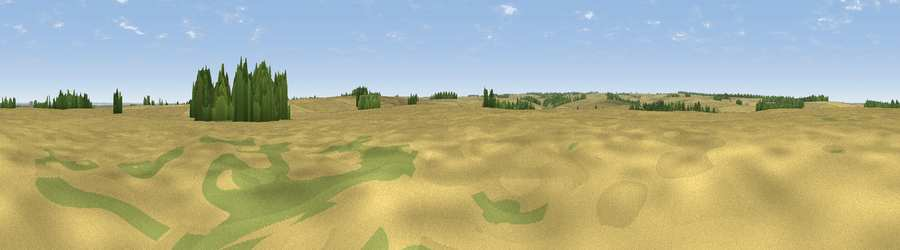

Viewpoint near Swallow
#40824 in England · top 83% of its area beats it · near SwallowThe view, rendered

A 360° render of this exact spot computed from the terrain model, tree cover and land cover — summer colours, afternoon light, calibrated against photographs of famous viewpoints. Real trees, hedges and buildings will differ in detail.
The panorama
Grey silhouette: terrain skyline in each direction (720 bearings, Earth curvature and refraction included). Dashed green: skyline with trees (+15 m) and buildings (+8 m) as obstacles. Blue strip: how far the ground is visible on each bearing.
Where the view opens
Wedge length = distance to the farthest visible ground on that bearing (vegetation-aware). Rings at 10, 25 and 50 km.
What fills the view
89% cropland · 4% grassland · 4% woodland · 2% water ·
Angular shares of the visible panorama (visual magnitude), not map area. Landscape diversity 0.21 (0–1 Shannon).
Key numbers
More beautiful places nearby
The staircase of upgrades: each row has a higher view potential than everything closer. Driving times are estimates from straight-line distance, calibrated against real road routing — check an actual route before setting out.
| Place | Direction | Drive | Score |
|---|---|---|---|
| Beelsby Top | SSE · 2 km | ~5 min | 36.6 |
| Round Hill | NNW · 2 km | ~6 min | 39.0 |
| Viewpoint near Hatcliffe | ESE · 3 km | ~7 min | 42.1 |
| Ravendale Top | ESE · 6 km | ~12 min | 49.6 |
| Fonaby Top | W · 6 km | ~13 min | 60.7 |
| Viewpoint near Nettleton | WSW · 9 km | ~18 min | 64.7 |
| Viewpoint near Claxby | SW · 10 km | ~19 min | 70.5 |
| Viewpoint near Claxby | SW · 11 km | ~20 min | 71.5 |
53.51123, -0.21039 · source: osm peak · position refined by local search. Computed location — check access rights before visiting.